- Understand User Persona's Needs
To start, I took a look at the user persona my team created in order to understand how her needs related to the visual layout of the acccount setup page.
Maria is a financial advisor who uses Payscape to manage her clients' assets.
She needs:
-a more efficient way to create accounts for her clients
-a way to manage more than one account at once (multiple accounts can be created for family members)
-a way to see the progress of each account being setup to help with pacing
Next, I looked at the current user flow and compared it to the desired userflow that incorporated the account setup page I was going to mockup.
Visual Sketch of User Flow:
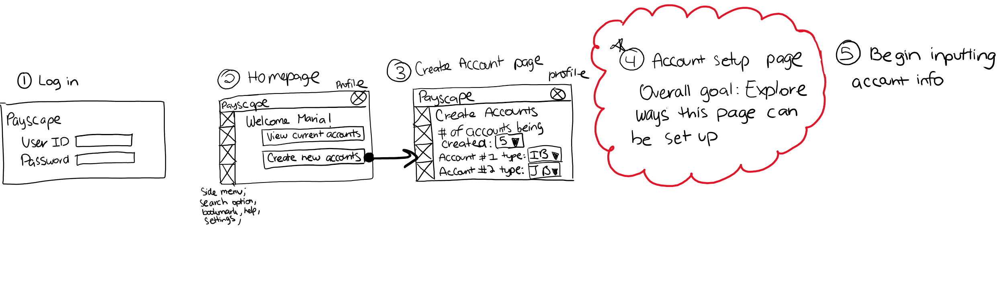
IB stands for individual brokerage
JB stands for joint brokerage
- Take Notes on Existing Components for Account Dashboard Page
2 components that I explored to use for the account dashboard page was the Nested Tables and Dashboard Layout (dashboard layout uses cards)
I took note of each of their capabilities and uses:
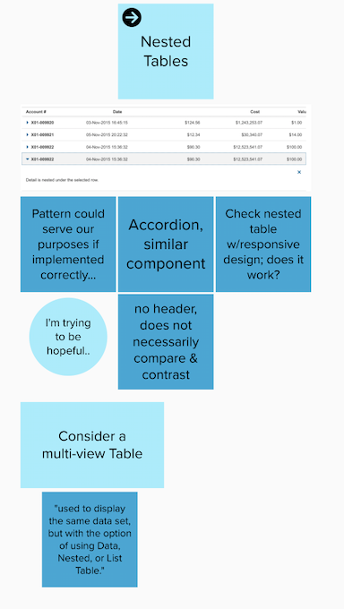
Notes on Nested Tables
Each row would be an account
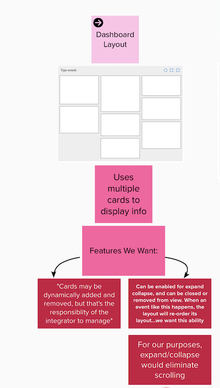
Notes on Dashboard Layout
Each card would be an account
I sketched out drafts of the account dashboard using the nested table component to see how it would look:
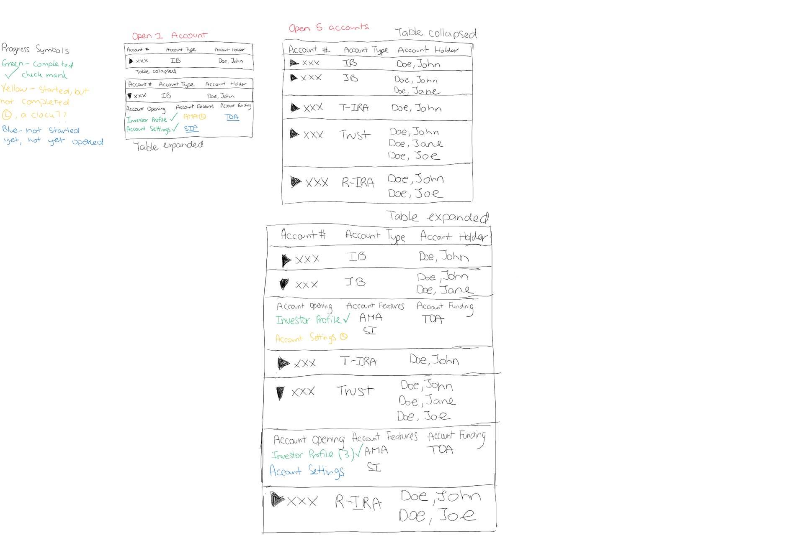
Rough wireframes of nested table dashboard layout
After this, I used my wireframes to create digital mockups on Sketch:
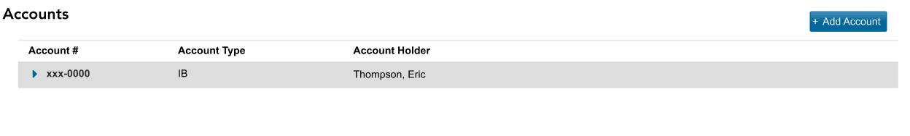
1 account with nested table component collpased
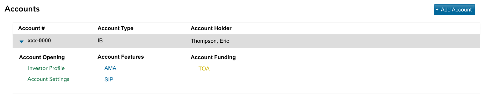
1 account with nested table component expand
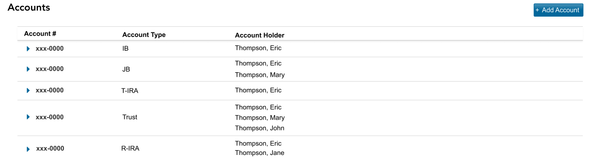
5 account with nested table component collapsed
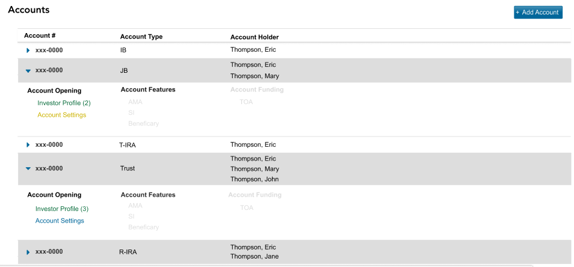
5 accounts with nested table component, 3 accounts expanded
Next, I sketched out drafts of the account dashboard using cards.
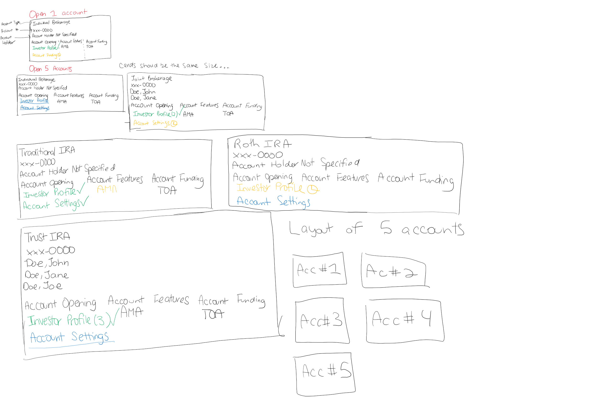
Rough wireframe of card dashboard layouts
Then, I created digital mockups on Sketch:
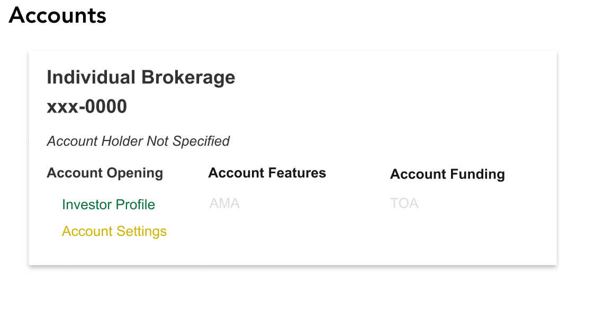
1 account created with card-component
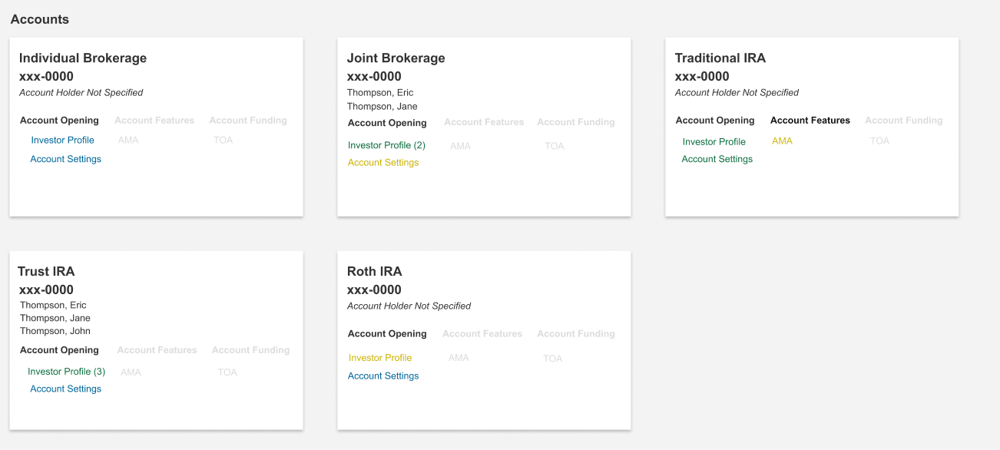
5 accounts created with card component
Maria also needs a way to see the progress of each account she is setting up.
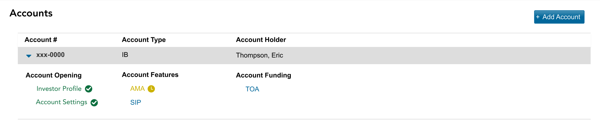
Progress Symbol Mockup 1: Nested Table
Progress Symbol Mockup 2: Nested Table
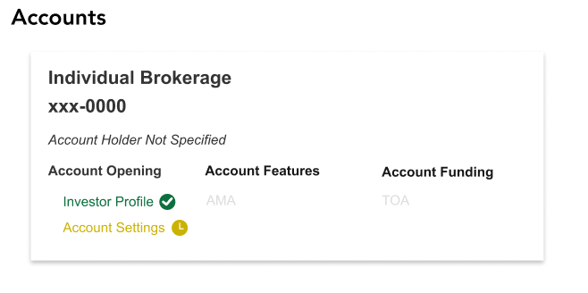
Progress Symbol Mockup 3: Card Component
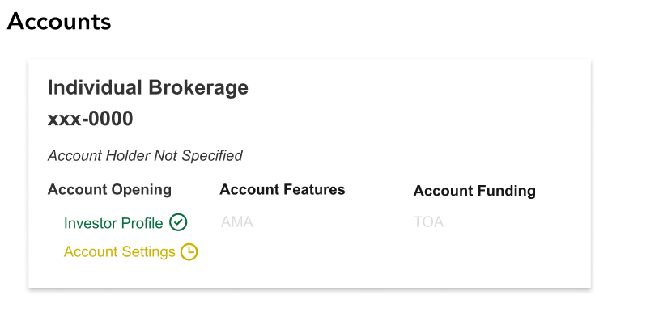
Progress Symbol Mockup 4: Card Component
My team tried to use progress bars previously, but the account setup process is complex and therefore, it was too complicated to implement progress bars.
- Assessing Nested Table and Dashboard Layout
Table titles are clear & makes it easer to look at account info
Expanding & collapsing each account can become tedious; responsiveness may be affected in mobile version
Not necessarily the best way to create 5 accounts at once;
Maria can be overwhelmed looking at it
Account status cannot be seen if table is collapsed
Easy to view and organize
Can see progress of each account at all timesx
Need to figure out spacing for progress symbols
Layout may not be suitable for mobile devices
Account status cannot be seen if table is collapsed
Expanding & collapsing each account can become tedious; responsiveness may be affected in mobile version
Table titles are clear & makes it easier to look at account info
Not necessarily the best way to create 5 accounts at once;
Maria can be overwhelmed looking at it
Account status cannot be seen if table is collapsed
Easy to view and organize
Need to figure out spacing for progress symbols
Can see progress of each account at all times
# of account holders can affect size of card
Layout may not be suitable for mobile devices
Conclusions
The next step for this project would for these mockups to be used in usability testing to see what users think.
I was unable to continue working on the project due to other responsibilities I had.
This project gave me the chance to practice my design skills on a real-life platform that would be used by real people. I had the opportunity to see how functionality of a platform is directly correlated to design.